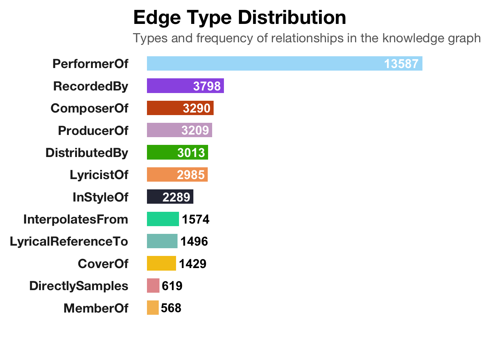
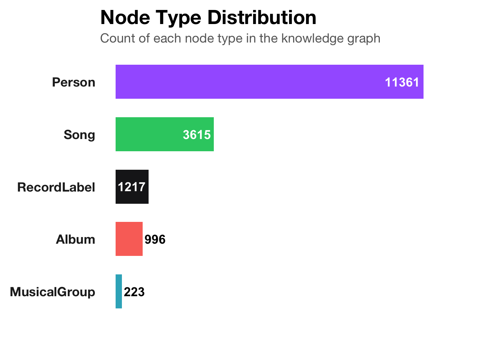

Code
pacman::p_load(tidyverse, jsonlite,
tidygraph, ggraph,ggplot2,SmartEDA,igraph,visNetwork,DiagrammeR,ggtext)Group 16
This document outlines the key data preparation steps applied to the MC1_graph.json dataset for the EchoScope™ project. The goal is to construct graph-based structures and enrich them with attributes suitable for influence analysis, visual exploration, and talent scoring.
For the purpose of this exercise, four R packages will be used. They are tidyverse, jsonlite, tidygraph and ggraph.
In the code chunk below, p_load() of pacman package is used to load the R packages into R environemnt.
For the purpose of this exercise, MC1_graph.json file will be used. Before getting started, you should have the data set in the data sub-folder.
In the code chunk below, fromJSON() of jsonlite package is used to import MC1_graph.json file into R and save the output object
What are the components of kg data?
List of 5
$ directed : logi TRUE
$ multigraph: logi TRUE
$ graph :List of 2
..$ node_default: Named list()
..$ edge_default: Named list()
$ nodes :'data.frame': 17412 obs. of 10 variables:
..$ Node Type : chr [1:17412] "Song" "Person" "Person" "Person" ...
..$ name : chr [1:17412] "Breaking These Chains" "Carlos Duffy" "Min Qin" "Xiuying Xie" ...
..$ single : logi [1:17412] TRUE NA NA NA NA FALSE ...
..$ release_date : chr [1:17412] "2017" NA NA NA ...
..$ genre : chr [1:17412] "Oceanus Folk" NA NA NA ...
..$ notable : logi [1:17412] TRUE NA NA NA NA TRUE ...
..$ id : int [1:17412] 0 1 2 3 4 5 6 7 8 9 ...
..$ written_date : chr [1:17412] NA NA NA NA ...
..$ stage_name : chr [1:17412] NA NA NA NA ...
..$ notoriety_date: chr [1:17412] NA NA NA NA ...
$ links :'data.frame': 37857 obs. of 4 variables:
..$ Edge Type: chr [1:37857] "InterpolatesFrom" "RecordedBy" "PerformerOf" "ComposerOf" ...
..$ source : int [1:37857] 0 0 1 1 2 2 3 5 5 5 ...
..$ target : int [1:37857] 1841 4 0 16180 0 16180 0 5088 14332 11677 ...
..$ key : int [1:37857] 0 0 0 0 0 0 0 0 0 0 ...The result shows a typical knowledge graph (KG) data structure, the detail explanation is as followed:
1.The overall structure is a list of 5 elements:
| Element Name | Meaning |
|---|---|
| directed: TRUE | Indicates the graph is directed (i.e., relationships have direction, like “someone performed a song”) |
| multigraph: TRUE | Indicates this is a multigraph, meaning multiple edges (relationships) can exist between the same pair of nodes (e.g., a person can be both “composer” and “performer”) |
| graph | Contains default attributes for nodes and edges (currently empty named lists) |
| nodes | A data.frame, each row represents a node (e.g., a person or a song) |
| links | A data.frame, each row represents an edge (i.e., a relationship between two nodes) |
2.nodes table (node metadata)
There are 17,412 nodes, with the following variables:
| Column Name | Example / Meaning |
|---|---|
| Node Type | Node type, such as "Song" or "Person" |
| name | Name of the node (e.g., a person or song title) |
| single | Whether it is a single (TRUE / FALSE) |
| release_date | Release date (e.g., "2017") |
| genre | Genre (e.g., "Oceanus Folk") |
| notable | Whether it’s notable (TRUE / FALSE) |
| id | Unique ID for the node |
| written_date | Date the song was written |
| stage_name | Stage name (if any) |
| notoriety_date | Date the artist became known (if any) |
3.links table (edge/relationship information)
There are 37,857 edges, with the following columns:
| Column Name | Meaning / Example |
|---|---|
| Edge Type | Type of relationship (e.g., "PerformerOf", "ComposerOf", "InterpolateFrom") |
| source | ID of the source node |
| target | ID of the target node |
| key | Differentiates multiple edges between the same nodes |
Inspect structure
Before preparing the data, it is always a good practice to examine the structure of kg object.
In the code chunk below str() is used to reveal the structure of kg object.
Next, as_tibble() of tibble package package is used to extract the nodes and links tibble data frames from kg object into two separate tibble data frames called nodes_tbl and edges_tbl respectively.
It is time for us to apply appropriate EDA methods to examine the data.
In this code chunk below, ggplot2 functions are used the reveal the frequency distribution of Edge Type field of edges_tbl.
# Count edge types
edge_types <- edges_tbl %>%
count(`Edge Type`) %>%
arrange(desc(n))
# Set palette and label alignment
edge_palette <- c("#CA5310", "#F5C518", "#E5989B", "#38B000", "#2D3142", "#06D6A0",
"#83C5BE", "#F4A261", "#F6BD60", "#A9DEF9", "#CBAACB", "#9B5DE5")
edge_types <- edge_types %>%
mutate(
text_color = ifelse(n > 2000, "white", "black"),
text_hjust = ifelse(n > 2000, 1.1, -0.1)
)
# Plot
ggplot(edge_types, aes(x = reorder(`Edge Type`, n), y = n, fill = `Edge Type`)) +
geom_col(width = 0.65, show.legend = FALSE) +
geom_text(aes(label = n, hjust = text_hjust, color = text_color),
size = 4.5, fontface = "bold") +
coord_flip(clip = "off") +
scale_fill_manual(values = edge_palette) +
scale_color_identity() +
labs(
title = "<b style='font-size:20pt;'>Edge Type Distribution</b>",
subtitle = "<span style='color:#666666;'>Types and frequency of relationships in the knowledge graph</span>",
x = NULL,
y = NULL
) +
theme_minimal(base_family = "Helvetica Neue") +
theme(
panel.grid = element_blank(),
axis.text.y = element_text(face = "bold", size = 13, color = "#222222"),
axis.text.x = element_blank(),
axis.ticks = element_blank(),
plot.title = element_markdown(size = 20, face = "bold", hjust = 0),
plot.subtitle = element_markdown(size = 13, hjust = 0),
plot.margin = margin(10, 60, 30, 10)
)
“PerformerOf” is the most frequent edge type
Explanation: The majority of edges connect a person to a song via a performance relationship.
Insight: This indicates that the relationship between performers and songs is a core structure in the knowledge graph, showing that the graph places a strong emphasis on who performed what.
“RecordedBy”, “ComposerOf”, and “ProducerOf” are also common
Explanation: Besides performers, the graph also documents many creators of the music, including composers, producers, and recording personnel.
Insight: This suggests the graph goes beyond surface-level links, capturing multiple roles across the music creation pipeline.
Edge types like “DirectlySamples”, “CoverOf”, “MemberOf”, and “LyricalReferenceTo” are less frequent
Explanation: These edges represent more complex or less common musical relationships, such as:
DirectlySamples: relates to copyright and musical inspiration
CoverOf: shows the propagation of classic works through cover versions
MemberOf: describes group or band membership
Insight: Although less common, these edge types may hold higher value in studying musical influence and cultural transmission.
# Step 1: Count each node type from your nodes_tbl
node_types <- nodes_tbl %>%
count(`Node Type`) %>%
arrange(desc(n))
# Step 2: Set custom palette by node type (ensure all types are covered)
genre_palette <- c(
"Person" = "#A566FF", # lavender
"Song" = "#2ECC71", # green
"RecordLabel" = "#1C1C1E", # black
"Album" = "#FA7268", # salmon
"MusicalGroup" = "#34B1C4" # aqua
)
# Step 3: Add label color and alignment based on value size
node_types <- node_types %>%
mutate(
text_color = ifelse(n > 1000, "white", "black"),
text_hjust = ifelse(n > 1000, 1.1, -0.1)
)
# Step 4: Plot
ggplot(node_types, aes(x = reorder(`Node Type`, n), y = n, fill = `Node Type`)) +
geom_col(width = 0.65, show.legend = FALSE) +
geom_text(aes(label = n, hjust = text_hjust, color = text_color),
size = 4.5, fontface = "bold") +
coord_flip(clip = "off") +
scale_fill_manual(values = genre_palette) +
scale_color_identity() +
labs(
title = "<b style='font-size:20pt;'>Node Type Distribution</b>",
subtitle = "<span style='color:#666666;'>Count of each node type in the knowledge graph</span>",
x = NULL,
y = NULL
) +
theme_minimal(base_family = "Helvetica Neue") +
theme(
panel.grid = element_blank(),
axis.text.y = element_text(face = "bold", size = 13, color = "#222222"),
axis.text.x = element_blank(),
axis.ticks = element_blank(),
plot.title = element_markdown(size = 20, face = "bold", hjust = 0),
plot.subtitle = element_markdown(size = 13, hjust = 0),
plot.margin = margin(10, 60, 30, 10)
)
Most nodes are of type Person
Explanation: Individuals (singers, composers, producers, etc.) form the majority of nodes.
Insight: The knowledge graph is person-centric, emphasizing individual contributions in the music ecosystem.
Song is the second most frequent node type
Explanation: Songs are heavily represented, as expected in a music-related knowledge graph.
Insight: This reflects the graph’s role in mapping who is connected to which songs, enabling analysis of performance, authorship, and influence.
Other node types (e.g., RecordLabel, Album, MusicalGroup) are far fewer
Explanation: Entities like music labels, albums, and groups are present but much less prominent.
Insight: These nodes play a supporting role in contextualizing the people-song relationships, potentially useful for advanced analyses (e.g., influence of labels, collaborations within groups).
MusicalGroup nodes are very rare
Insight: Either the graph focuses more on individual artists rather than bands/groups, or group membership data may be under-represented.
Before we can go ahead to build the tidygraph object, it is important for us to ensures each id from the node list is mapped to the correct row number. This requirement can be achive by using the code chunk below.
Next, we will map the source and the target IDs to row indices by using the code chunk below.
To better understand the changes before and after the process, it is to take a screenshot of edges_tbl before and after this process and examine the differences.
Now we can see the difference between before and after the edges_tbl.
Lastly, the code chunk below will be used to exclude the unmatch edges.
Lastly, tbl_graph() is used to create tidygraph’s graph object by using the code chunk below.
# A tbl_graph: 17412 nodes and 37857 edges
#
# A directed multigraph with 16 components
#
# Node Data: 17,412 × 10 (active)
`Node Type` name single release_date genre notable id written_date
<chr> <chr> <lgl> <chr> <chr> <lgl> <int> <chr>
1 Song Breaking Th… TRUE 2017 Ocea… TRUE 0 <NA>
2 Person Carlos Duffy NA <NA> <NA> NA 1 <NA>
3 Person Min Qin NA <NA> <NA> NA 2 <NA>
4 Person Xiuying Xie NA <NA> <NA> NA 3 <NA>
5 RecordLabel Nautical Mi… NA <NA> <NA> NA 4 <NA>
6 Song Unshackled … FALSE 2026 Lo-F… TRUE 5 <NA>
7 Person Luke Payne NA <NA> <NA> NA 6 <NA>
8 Person Xiulan Zeng NA <NA> <NA> NA 7 <NA>
9 Person David Frank… NA <NA> <NA> NA 8 <NA>
10 RecordLabel Colline-Cas… NA <NA> <NA> NA 9 <NA>
# ℹ 17,402 more rows
# ℹ 2 more variables: stage_name <chr>, notoriety_date <chr>
#
# Edge Data: 37,857 × 6
from to `Edge Type` source target key
<int> <int> <chr> <int> <int> <int>
1 1 1842 InterpolatesFrom 0 1841 0
2 1 5 RecordedBy 0 4 0
3 2 1 PerformerOf 1 0 0
# ℹ 37,854 more rowswe might want to confirm the output object is indeed in tidygraph format by using the code chunk below.
Firstly, I created an extract_subnetwork function to simplify the process of extracting network data. The methodology was referenced from a senior’s work. In this case, I will also add a direction parameter to allow for further filtering.
extract_subnetwork <- function(graph, node_name,
distance = NULL,
direction = c("all", "in", "out"),
edge_types = NULL,
node_types = NULL) {
direction <- match.arg(direction)
node <- which(V(graph)$name == node_name)
if (length(node) == 0) stop("Node name not found in graph.")
distance <- ifelse(is.null(distance), length(graph), distance)
mode <- switch(direction,
all = "all",
`in` = "in",
out = "out")
igraph_subgraph <- induced_subgraph(graph, vids = ego(graph, node, order = distance, mode = mode)[[1]])
nodes_df <- igraph::as_data_frame(igraph_subgraph, what = "vertices")
edges_df <- igraph::as_data_frame(igraph_subgraph, what = "edges")
if (!is.null(edge_types)) {
edges_df <- edges_df %>% dplyr::filter(`Edge Type` %in% edge_types)
}
if (!is.null(node_types)) {
nodes_df <- nodes_df %>% dplyr::filter(`Node Type` %in% node_types)
}
used_node_ids <- unique(c(edges_df$from, edges_df$to))
nodes_df <- nodes_df %>% dplyr::filter(name %in% used_node_ids)
tidygraph::tbl_graph(nodes = nodes_df, edges = edges_df, directed = igraph::is_directed(graph))
}From the initial (though imperfect) visNetwork visualization, we first examined what she had produced, and then proceeded to explore further connections.
subgraph_in <- extract_subnetwork(
graph,
node_name = "Sailor Shift",
distance = 5,
direction = "out"
)
subgraph_igraph <- as.igraph(subgraph_in)
nodes_all <- igraph::as_data_frame(subgraph_igraph, what = "vertices")
edges_all <- igraph::as_data_frame(subgraph_igraph, what = "edges")
sailor_id <- nodes_all$name[nodes_all$name == "Sailor Shift"]
edges_1st <- edges_all %>% filter(from == "Sailor Shift")
valid_targets <- edges_1st %>%
left_join(nodes_all, by = c("to" = "name")) %>%
filter(`Node Type` %in% c("MusicalGroup", "Song", "Album","RecordLabel")) %>%
pull(to)
valid_node_ids <- unique(c("Sailor Shift", valid_targets))
edges_vn <- edges_all %>%
filter(from %in% valid_node_ids | to %in% valid_node_ids)
used_nodes <- unique(c(edges_vn$from, edges_vn$to))
nodes_vn <- nodes_all %>%
filter(name %in% used_nodes) %>%
mutate(id = name, label = name, group = `Node Type`)
edges_vn <- edges_vn %>%
mutate(
label = `Edge Type`,
title = paste0("Edge Type: ", `Edge Type`)
)visNetwork(nodes_vn, edges_vn, height = "800px", width = "100%") %>%
visEdges(
arrows = "to",
font = list(
size = 12,
align = "middle",
color = "black"
)
) %>%
visOptions(
highlightNearest = list(enabled = TRUE, degree = 4, hover = TRUE),
nodesIdSelection = TRUE,
selectedBy = "group"
) %>%
visLegend() %>%
visLayout(randomSeed = 1234) %>%
visInteraction(navigationButtons = TRUE)1. Sailor Shift (or the green central node) has wide-reaching influence
The central green node acts as a hub, with dozens of outgoing connections.
It suggests that this artist or work has inspired or been referenced by a large number of songs across the network.
These edges may include stylistic influence (InStyleOf), lyrical references (LyricalReferenceTo), or direct sampling (DirectlySamples).
2. Artists (red nodes) serve as key enablers of diffusion
Red clusters represent creators who performed or composed songs.
Some artists are connected to many songs (e.g., bottom-left cluster), indicating high creative productivity or influence.
These creators may serve as important bridges that bring influence from central nodes into new musical outputs.
3. Song clusters reveal thematic or stylistic communities
Yellow nodes (songs) tend to cluster around individual artists or genres.
These local clusters might represent albums, collaborative projects, or genre-specific scenes (e.g., “Oceanus Folk”).
The existence of many tightly grouped songs suggests coherent genre communities.
4. Long influence chains suggest intergenerational influence
You can trace multi-hop paths through edges like "InterpolatesFrom" and "LyricalReferenceTo".
This suggests a rich lineage of stylistic borrowing, where newer works are built upon a cascade of earlier inspirations.
5. Edge Type variety shows diverse forms of musical relationships
Edges include "PerformerOf", "ComposerOf", "ProducerOf", "CoverOf", etc.
The diversity of edge types shows that musical influence is not just stylistic, but also structural (e.g., who produced or performed the track).
First Layer Exploration
We started with all nodes directly connected from Sailor Shift, and added the type information of each corresponding from-node.
edges_1st_full_named <- edges_1st %>%
left_join(nodes_all %>% select(name, `Node Type`) %>%
rename(from = name, `From Type` = `Node Type`), by = "from") %>%
left_join(nodes_all %>% select(name, `Node Type`, release_date, genre, notable, notoriety_date) %>%
rename(to = name, `To Type` = `Node Type`, `To Release` = release_date,
`To Genre` = genre, `To Notable` = notable, `To Notoriety Date` = notoriety_date),
by = "to") %>%
select(from, `From Type`, to, `To Type`, `Edge Type`, `To Release`, `To Genre`, `To Notable`, `To Notoriety Date`)| from | From Type | to | To Type | Edge Type | To Release | To Genre | To Notable | To Notoriety Date |
|---|---|---|---|---|---|---|---|---|
| Sailor Shift | Person | Neon Heartbeat | Album | LyricistOf | 2031 | Synthwave | FALSE | NA |
| Sailor Shift | Person | Ballads for the End of Time | Album | LyricistOf | 2033 | Oceanus Folk | TRUE | NA |
| Sailor Shift | Person | Melancholy Circuitry | Album | LyricistOf | 2033 | Americana | TRUE | NA |
| Sailor Shift | Person | Drifting Between the Stars and the Sea | Album | LyricistOf | 2034 | Oceanus Folk | TRUE | NA |
| Sailor Shift | Person | Artificial Sunsets | Album | LyricistOf | 2035 | Oceanus Folk | TRUE | NA |
| Sailor Shift | Person | Electric Reverie | Album | LyricistOf | 2038 | Oceanus Folk | TRUE | NA |
| Sailor Shift | Person | Ballads for the Low Tide | Album | LyricistOf | 2037 | Oceanus Folk | TRUE | NA |
| Sailor Shift | Person | The Fiddle & The Fjord | MusicalGroup | InStyleOf | NA | NA | NA | NA |
| Sailor Shift | Person | Tides of Echos | Album | LyricistOf | 2029 | Oceanus Folk | TRUE | NA |
| Sailor Shift | Person | Hidden Depths | Album | LyricistOf | 2031 | Oceanus Folk | TRUE | NA |
| Sailor Shift | Person | Ivy Echos | MusicalGroup | DirectlySamples | NA | NA | NA | NA |
| Sailor Shift | Person | Ivy Echos | MusicalGroup | MemberOf | NA | NA | NA | NA |
| Sailor Shift | Person | The Kelp Forest Canticles | Album | LyricistOf | 2024 | Oceanus Folk | TRUE | NA |
| Sailor Shift | Person | Luminescent Tides | Album | LyricistOf | 2025 | Oceanus Folk | TRUE | NA |
| Sailor Shift | Person | Shoreline Sonnets | Album | LyricistOf | 2026 | Oceanus Folk | TRUE | NA |
| Sailor Shift | Person | Tidal Pop Waves | Album | LyricistOf | 2028 | Oceanus Folk | TRUE | NA |
| Sailor Shift | Person | Tidal Pop Waves | Album | PerformerOf | 2028 | Oceanus Folk | TRUE | NA |
| Sailor Shift | Person | Salty Dreams | Album | LyricistOf | 2030 | Oceanus Folk | TRUE | NA |
| Sailor Shift | Person | Salty Dreams | Album | PerformerOf | 2030 | Oceanus Folk | TRUE | NA |
| Sailor Shift | Person | The Current & The Chord | Album | LyricistOf | 2032 | Oceanus Folk | TRUE | NA |
| Sailor Shift | Person | The Current & The Chord | Album | PerformerOf | 2032 | Oceanus Folk | TRUE | NA |
| Sailor Shift | Person | Coral Beats | Album | LyricistOf | 2034 | Oceanus Folk | TRUE | NA |
| Sailor Shift | Person | Coral Beats | Album | PerformerOf | 2034 | Oceanus Folk | TRUE | NA |
| Sailor Shift | Person | Tides & Ballads | Album | LyricistOf | 2036 | Oceanus Folk | TRUE | NA |
| Sailor Shift | Person | Tides & Ballads | Album | PerformerOf | 2036 | Oceanus Folk | TRUE | NA |
| Sailor Shift | Person | Oceanbound | Album | LyricistOf | 2038 | Oceanus Folk | TRUE | NA |
| Sailor Shift | Person | Oceanbound | Album | PerformerOf | 2038 | Oceanus Folk | TRUE | NA |
| Sailor Shift | Person | Echoes of the Deep | Album | LyricistOf | 2040 | Oceanus Folk | TRUE | NA |
| Sailor Shift | Person | Echoes of the Deep | Album | PerformerOf | 2040 | Oceanus Folk | TRUE | NA |
| Sailor Shift | Person | High Tide Heartbeat | Song | PerformerOf | 2028 | Oceanus Folk | FALSE | NA |
| Sailor Shift | Person | Electric Eel Love | Song | PerformerOf | 2028 | Oceanus Folk | TRUE | NA |
| Sailor Shift | Person | Sun-Drenched Daydream | Song | PerformerOf | 2028 | Oceanus Folk | FALSE | NA |
| Sailor Shift | Person | Chord of the Deep | Song | PerformerOf | 2028 | Oceanus Folk | FALSE | NA |
| Sailor Shift | Person | Heart of the Habitat | Song | PerformerOf | 2030 | Oceanus Folk | FALSE | NA |
| Sailor Shift | Person | Reef Rhythm | Song | PerformerOf | 2030 | Oceanus Folk | FALSE | NA |
| Sailor Shift | Person | Driftwood Lullaby | Song | PerformerOf | 2030 | Oceanus Folk | FALSE | NA |
| Sailor Shift | Person | Saltwater Hymn | Song | PerformerOf | 2032 | Oceanus Folk | FALSE | NA |
| Sailor Shift | Person | Moon Over the Tide | Song | PerformerOf | 2034 | Oceanus Folk | TRUE | NA |
| Sailor Shift | Person | Into the Current | Song | PerformerOf | 2034 | Oceanus Folk | FALSE | NA |
| Sailor Shift | Person | Barnacle Heart | Song | PerformerOf | 2034 | Oceanus Folk | FALSE | NA |
| Sailor Shift | Person | Fog & Fiddle | Song | PerformerOf | 2036 | Oceanus Folk | TRUE | NA |
| Sailor Shift | Person | The Fisherman’s Prayer | Song | PerformerOf | 2036 | Oceanus Folk | FALSE | NA |
| Sailor Shift | Person | Stormsong | Song | PerformerOf | 2038 | Oceanus Folk | TRUE | NA |
| Sailor Shift | Person | Salt in My Veins | Song | PerformerOf | 2040 | Oceanus Folk | FALSE | NA |
| Sailor Shift | Person | The Last Mariner | Song | PerformerOf | 2040 | Oceanus Folk | FALSE | NA |
| Sailor Shift | Person | The Saltwater Weavers | MusicalGroup | InStyleOf | NA | NA | NA | NA |
| Sailor Shift | Person | Drowned Harbor | MusicalGroup | LyricalReferenceTo | NA | NA | NA | NA |
| Sailor Shift | Person | Tidesworn Ballads | Album | PerformerOf | 2031 | Oceanus Folk | TRUE | NA |
| Sailor Shift | Person | Tidesworn Ballads | Album | LyricistOf | 2031 | Oceanus Folk | TRUE | NA |
| Sailor Shift | Person | Submerged Sonatas | Album | PerformerOf | 2031 | Oceanus Folk | TRUE | NA |
| Sailor Shift | Person | Submerged Sonatas | Album | LyricistOf | 2031 | Oceanus Folk | TRUE | NA |
| Sailor Shift | Person | Seashell Serenade | Song | PerformerOf | 2030 | Oceanus Folk | TRUE | 2030 |
Below is all the information on the First layer, and then remove if there is no other influenced layer
| from | From Type | to | To Type | Edge Type | To Release | To Genre | To Notable | To Notoriety Date |
|---|---|---|---|---|---|---|---|---|
| Sailor Shift | Person | Ivy Echos | MusicalGroup | DirectlySamples | NA | NA | NA | NA |
| from | From Type | to | To Type | Edge Type | To Release | To Genre | To Notable | To Notoriety Date |
|---|---|---|---|---|---|---|---|---|
| Sailor Shift | Person | The Fiddle & The Fjord | MusicalGroup | InStyleOf | NA | NA | NA | NA |
| Sailor Shift | Person | The Saltwater Weavers | MusicalGroup | InStyleOf | NA | NA | NA | NA |
| from | From Type | to | To Type | Edge Type | To Release | To Genre | To Notable | To Notoriety Date |
|---|---|---|---|---|---|---|---|---|
| Sailor Shift | Person | Drowned Harbor | MusicalGroup | LyricalReferenceTo | NA | NA | NA | NA |
| from | From Type | to | To Type | Edge Type | To Release | To Genre | To Notable | To Notoriety Date |
|---|---|---|---|---|---|---|---|---|
| Sailor Shift | Person | Neon Heartbeat | Album | LyricistOf | 2031 | Synthwave | FALSE | NA |
| Sailor Shift | Person | Ballads for the End of Time | Album | LyricistOf | 2033 | Oceanus Folk | TRUE | NA |
| Sailor Shift | Person | Melancholy Circuitry | Album | LyricistOf | 2033 | Americana | TRUE | NA |
| Sailor Shift | Person | Drifting Between the Stars and the Sea | Album | LyricistOf | 2034 | Oceanus Folk | TRUE | NA |
| Sailor Shift | Person | Artificial Sunsets | Album | LyricistOf | 2035 | Oceanus Folk | TRUE | NA |
| Sailor Shift | Person | Electric Reverie | Album | LyricistOf | 2038 | Oceanus Folk | TRUE | NA |
| Sailor Shift | Person | Ballads for the Low Tide | Album | LyricistOf | 2037 | Oceanus Folk | TRUE | NA |
| Sailor Shift | Person | Tides of Echos | Album | LyricistOf | 2029 | Oceanus Folk | TRUE | NA |
| Sailor Shift | Person | Hidden Depths | Album | LyricistOf | 2031 | Oceanus Folk | TRUE | NA |
| Sailor Shift | Person | The Kelp Forest Canticles | Album | LyricistOf | 2024 | Oceanus Folk | TRUE | NA |
| Sailor Shift | Person | Luminescent Tides | Album | LyricistOf | 2025 | Oceanus Folk | TRUE | NA |
| Sailor Shift | Person | Shoreline Sonnets | Album | LyricistOf | 2026 | Oceanus Folk | TRUE | NA |
| Sailor Shift | Person | Tidal Pop Waves | Album | LyricistOf | 2028 | Oceanus Folk | TRUE | NA |
| Sailor Shift | Person | Salty Dreams | Album | LyricistOf | 2030 | Oceanus Folk | TRUE | NA |
| Sailor Shift | Person | The Current & The Chord | Album | LyricistOf | 2032 | Oceanus Folk | TRUE | NA |
| Sailor Shift | Person | Coral Beats | Album | LyricistOf | 2034 | Oceanus Folk | TRUE | NA |
| Sailor Shift | Person | Tides & Ballads | Album | LyricistOf | 2036 | Oceanus Folk | TRUE | NA |
| Sailor Shift | Person | Oceanbound | Album | LyricistOf | 2038 | Oceanus Folk | TRUE | NA |
| Sailor Shift | Person | Echoes of the Deep | Album | LyricistOf | 2040 | Oceanus Folk | TRUE | NA |
| Sailor Shift | Person | Tidesworn Ballads | Album | LyricistOf | 2031 | Oceanus Folk | TRUE | NA |
| Sailor Shift | Person | Submerged Sonatas | Album | LyricistOf | 2031 | Oceanus Folk | TRUE | NA |
| from | From Type | to | To Type | Edge Type | To Release | To Genre | To Notable | To Notoriety Date |
|---|---|---|---|---|---|---|---|---|
| Sailor Shift | Person | Tidal Pop Waves | Album | PerformerOf | 2028 | Oceanus Folk | TRUE | NA |
| Sailor Shift | Person | Salty Dreams | Album | PerformerOf | 2030 | Oceanus Folk | TRUE | NA |
| Sailor Shift | Person | The Current & The Chord | Album | PerformerOf | 2032 | Oceanus Folk | TRUE | NA |
| Sailor Shift | Person | Coral Beats | Album | PerformerOf | 2034 | Oceanus Folk | TRUE | NA |
| Sailor Shift | Person | Tides & Ballads | Album | PerformerOf | 2036 | Oceanus Folk | TRUE | NA |
| Sailor Shift | Person | Oceanbound | Album | PerformerOf | 2038 | Oceanus Folk | TRUE | NA |
| Sailor Shift | Person | Echoes of the Deep | Album | PerformerOf | 2040 | Oceanus Folk | TRUE | NA |
| Sailor Shift | Person | High Tide Heartbeat | Song | PerformerOf | 2028 | Oceanus Folk | FALSE | NA |
| Sailor Shift | Person | Electric Eel Love | Song | PerformerOf | 2028 | Oceanus Folk | TRUE | NA |
| Sailor Shift | Person | Sun-Drenched Daydream | Song | PerformerOf | 2028 | Oceanus Folk | FALSE | NA |
| Sailor Shift | Person | Chord of the Deep | Song | PerformerOf | 2028 | Oceanus Folk | FALSE | NA |
| Sailor Shift | Person | Heart of the Habitat | Song | PerformerOf | 2030 | Oceanus Folk | FALSE | NA |
| Sailor Shift | Person | Reef Rhythm | Song | PerformerOf | 2030 | Oceanus Folk | FALSE | NA |
| Sailor Shift | Person | Driftwood Lullaby | Song | PerformerOf | 2030 | Oceanus Folk | FALSE | NA |
| Sailor Shift | Person | Saltwater Hymn | Song | PerformerOf | 2032 | Oceanus Folk | FALSE | NA |
| Sailor Shift | Person | Moon Over the Tide | Song | PerformerOf | 2034 | Oceanus Folk | TRUE | NA |
| Sailor Shift | Person | Into the Current | Song | PerformerOf | 2034 | Oceanus Folk | FALSE | NA |
| Sailor Shift | Person | Barnacle Heart | Song | PerformerOf | 2034 | Oceanus Folk | FALSE | NA |
| Sailor Shift | Person | Fog & Fiddle | Song | PerformerOf | 2036 | Oceanus Folk | TRUE | NA |
| Sailor Shift | Person | The Fisherman’s Prayer | Song | PerformerOf | 2036 | Oceanus Folk | FALSE | NA |
| Sailor Shift | Person | Stormsong | Song | PerformerOf | 2038 | Oceanus Folk | TRUE | NA |
| Sailor Shift | Person | Salt in My Veins | Song | PerformerOf | 2040 | Oceanus Folk | FALSE | NA |
| Sailor Shift | Person | The Last Mariner | Song | PerformerOf | 2040 | Oceanus Folk | FALSE | NA |
| Sailor Shift | Person | Tidesworn Ballads | Album | PerformerOf | 2031 | Oceanus Folk | TRUE | NA |
| Sailor Shift | Person | Submerged Sonatas | Album | PerformerOf | 2031 | Oceanus Folk | TRUE | NA |
| Sailor Shift | Person | Seashell Serenade | Song | PerformerOf | 2030 | Oceanus Folk | TRUE | 2030 |
Here is the data preparation for visual all the connect from Sailor
| from | From Type | to | To Type | Edge Type | To Release | To Genre | To Notable | To Notoriety Date |
|---|---|---|---|---|---|---|---|---|
| Sailor Shift | Person | Neon Heartbeat | Album | LyricistOf | 2031 | Synthwave | FALSE | NA |
| Sailor Shift | Person | Ballads for the End of Time | Album | LyricistOf | 2033 | Oceanus Folk | TRUE | NA |
| Sailor Shift | Person | Melancholy Circuitry | Album | LyricistOf | 2033 | Americana | TRUE | NA |
| Sailor Shift | Person | Drifting Between the Stars and the Sea | Album | LyricistOf | 2034 | Oceanus Folk | TRUE | NA |
| Sailor Shift | Person | Artificial Sunsets | Album | LyricistOf | 2035 | Oceanus Folk | TRUE | NA |
| Sailor Shift | Person | Electric Reverie | Album | LyricistOf | 2038 | Oceanus Folk | TRUE | NA |
| Sailor Shift | Person | Ballads for the Low Tide | Album | LyricistOf | 2037 | Oceanus Folk | TRUE | NA |
| Sailor Shift | Person | Tides of Echos | Album | LyricistOf | 2029 | Oceanus Folk | TRUE | NA |
| Sailor Shift | Person | Hidden Depths | Album | LyricistOf | 2031 | Oceanus Folk | TRUE | NA |
| Sailor Shift | Person | Ivy Echos | MusicalGroup | MemberOf | NA | NA | NA | NA |
| Sailor Shift | Person | The Kelp Forest Canticles | Album | LyricistOf | 2024 | Oceanus Folk | TRUE | NA |
| Sailor Shift | Person | Luminescent Tides | Album | LyricistOf | 2025 | Oceanus Folk | TRUE | NA |
| Sailor Shift | Person | Shoreline Sonnets | Album | LyricistOf | 2026 | Oceanus Folk | TRUE | NA |
| Sailor Shift | Person | Tidal Pop Waves | Album | LyricistOf | 2028 | Oceanus Folk | TRUE | NA |
| Sailor Shift | Person | Tidal Pop Waves | Album | PerformerOf | 2028 | Oceanus Folk | TRUE | NA |
| Sailor Shift | Person | Salty Dreams | Album | LyricistOf | 2030 | Oceanus Folk | TRUE | NA |
| Sailor Shift | Person | Salty Dreams | Album | PerformerOf | 2030 | Oceanus Folk | TRUE | NA |
| Sailor Shift | Person | The Current & The Chord | Album | LyricistOf | 2032 | Oceanus Folk | TRUE | NA |
| Sailor Shift | Person | The Current & The Chord | Album | PerformerOf | 2032 | Oceanus Folk | TRUE | NA |
| Sailor Shift | Person | Coral Beats | Album | LyricistOf | 2034 | Oceanus Folk | TRUE | NA |
| Sailor Shift | Person | Coral Beats | Album | PerformerOf | 2034 | Oceanus Folk | TRUE | NA |
| Sailor Shift | Person | Tides & Ballads | Album | LyricistOf | 2036 | Oceanus Folk | TRUE | NA |
| Sailor Shift | Person | Tides & Ballads | Album | PerformerOf | 2036 | Oceanus Folk | TRUE | NA |
| Sailor Shift | Person | Oceanbound | Album | LyricistOf | 2038 | Oceanus Folk | TRUE | NA |
| Sailor Shift | Person | Oceanbound | Album | PerformerOf | 2038 | Oceanus Folk | TRUE | NA |
| Sailor Shift | Person | Echoes of the Deep | Album | LyricistOf | 2040 | Oceanus Folk | TRUE | NA |
| Sailor Shift | Person | Echoes of the Deep | Album | PerformerOf | 2040 | Oceanus Folk | TRUE | NA |
| Sailor Shift | Person | High Tide Heartbeat | Song | PerformerOf | 2028 | Oceanus Folk | FALSE | NA |
| Sailor Shift | Person | Electric Eel Love | Song | PerformerOf | 2028 | Oceanus Folk | TRUE | NA |
| Sailor Shift | Person | Sun-Drenched Daydream | Song | PerformerOf | 2028 | Oceanus Folk | FALSE | NA |
| Sailor Shift | Person | Chord of the Deep | Song | PerformerOf | 2028 | Oceanus Folk | FALSE | NA |
| Sailor Shift | Person | Heart of the Habitat | Song | PerformerOf | 2030 | Oceanus Folk | FALSE | NA |
| Sailor Shift | Person | Reef Rhythm | Song | PerformerOf | 2030 | Oceanus Folk | FALSE | NA |
| Sailor Shift | Person | Driftwood Lullaby | Song | PerformerOf | 2030 | Oceanus Folk | FALSE | NA |
| Sailor Shift | Person | Saltwater Hymn | Song | PerformerOf | 2032 | Oceanus Folk | FALSE | NA |
| Sailor Shift | Person | Moon Over the Tide | Song | PerformerOf | 2034 | Oceanus Folk | TRUE | NA |
| Sailor Shift | Person | Into the Current | Song | PerformerOf | 2034 | Oceanus Folk | FALSE | NA |
| Sailor Shift | Person | Barnacle Heart | Song | PerformerOf | 2034 | Oceanus Folk | FALSE | NA |
| Sailor Shift | Person | Fog & Fiddle | Song | PerformerOf | 2036 | Oceanus Folk | TRUE | NA |
| Sailor Shift | Person | The Fisherman’s Prayer | Song | PerformerOf | 2036 | Oceanus Folk | FALSE | NA |
| Sailor Shift | Person | Stormsong | Song | PerformerOf | 2038 | Oceanus Folk | TRUE | NA |
| Sailor Shift | Person | Salt in My Veins | Song | PerformerOf | 2040 | Oceanus Folk | FALSE | NA |
| Sailor Shift | Person | The Last Mariner | Song | PerformerOf | 2040 | Oceanus Folk | FALSE | NA |
| Sailor Shift | Person | Tidesworn Ballads | Album | PerformerOf | 2031 | Oceanus Folk | TRUE | NA |
| Sailor Shift | Person | Tidesworn Ballads | Album | LyricistOf | 2031 | Oceanus Folk | TRUE | NA |
| Sailor Shift | Person | Submerged Sonatas | Album | PerformerOf | 2031 | Oceanus Folk | TRUE | NA |
| Sailor Shift | Person | Submerged Sonatas | Album | LyricistOf | 2031 | Oceanus Folk | TRUE | NA |
| Sailor Shift | Person | Seashell Serenade | Song | PerformerOf | 2030 | Oceanus Folk | TRUE | 2030 |
edge_colors <- c(
"PerformerOf" = "#2ca02c",
"LyricistOf" = "#1f77b4",
"MemberOf" = "#d62728"
)
nodes_subgraph <- nodes_all %>%
filter(name %in% c("Sailor Shift", edges_1st_filtered$to)) %>%
transmute(id = name, label = name, group = `Node Type`)
edges_subgraph <- edges_1st_filtered %>%
left_join(
nodes_all %>% select(name, `Node Type`) %>% rename(to = name, to_type = `Node Type`),
by = "to"
) %>%
mutate(
color = edge_colors[`Edge Type`],
title = paste0("Edge Type: ", `Edge Type`, "<br>To Type: ", to_type)
) %>%
transmute(
from = from,
to = to,
title = title,
color = color,
arrows = "to"
)
edge_legend <- data.frame(
label = names(edge_colors),
color = unname(edge_colors),
arrows = rep("to", length(edge_colors)),
stringsAsFactors = FALSE
)And here is the directly neighbours :
nodes_tbl <- nodes_tbl %>% mutate(index = row_number())
sailor_index <- nodes_tbl %>%
filter(name == "Sailor Shift") %>%
pull(index)
influence_edges <- c("InStyleOf", "CoverOf", "InterpolatesFrom", "LyricalReferenceTo", "DirectlySamples")
edges_from_sailor <- edges_tbl %>%
filter(to == sailor_index & `Edge Type` %in% influence_edges)
influenced1 <- edges_from_sailor %>%
left_join(nodes_tbl, by = c("from" = "index")) %>%
select(name, `Edge Type`, everything())| name | Edge Type | source | target | key | from | to | Node Type | single | release_date | genre | notable | id | written_date | stage_name | notoriety_date |
|---|---|---|---|---|---|---|---|---|---|---|---|---|---|---|---|
| Cassette Future | InStyleOf | 17022 | 17255 | 0 | 17023 | 17256 | MusicalGroup | NA | NA | NA | NA | 17022 | NA | NA | NA |
| Silver Veil | LyricalReferenceTo | 17032 | 17255 | 0 | 17033 | 17256 | MusicalGroup | NA | NA | NA | NA | 17032 | NA | NA | NA |
| The Phantom Operators | InterpolatesFrom | 17063 | 17255 | 0 | 17064 | 17256 | MusicalGroup | NA | NA | NA | NA | 17063 | NA | NA | NA |
| The Hollow Monarchs | InStyleOf | 17110 | 17255 | 0 | 17111 | 17256 | MusicalGroup | NA | NA | NA | NA | 17110 | NA | NA | NA |
| Cassian Storm | LyricalReferenceTo | 17126 | 17255 | 0 | 17127 | 17256 | Person | NA | NA | NA | NA | 17126 | NA | Seraphina Vale | NA |
| Claire Holmes | InterpolatesFrom | 17155 | 17255 | 0 | 17156 | 17256 | Person | NA | NA | NA | NA | 17155 | NA | Jaye Finch | NA |
| Copper Canyon Ghosts | DirectlySamples | 17361 | 17255 | 0 | 17362 | 17256 | MusicalGroup | NA | NA | NA | NA | 17361 | NA | NA | NA |
subgraph_in <- extract_subnetwork(
graph,
node_name = "Sailor Shift",
distance = 3,
direction = "in"
)
edges_vn <- igraph::as_data_frame(subgraph_in, what = "edges") %>%
filter(`Edge Type` != "ProducerOf") %>%
rename(from = from, to = to, label = `Edge Type`)
nodes_vn <- igraph::as_data_frame(subgraph_in, what = "vertices") %>%
mutate(id = name, label = name, group = `Node Type`)
used_nodes <- unique(c(edges_vn$from, edges_vn$to))
nodes_vn <- nodes_vn %>% filter(id %in% used_nodes)We attempted to trace Sailor Shift’s indirect influence through songs and albums to identify impacted individuals. However, this approach yielded no results, so we decided not to pursue this path further.
Based on the results, Copper Canyon Ghosts is identified as an Oceanus Folk band. To explore the third question—“How has Sailor Shift influenced collaborators within the broader Oceanus Folk community?”—we will examine both direct and indirect influence paths .
First, we identify the artists and groups influenced by Sailor Shift. Among them, we determine which ones belong to the Oceanus Folk genre, using “genre” as our key search indicator.
nodes_tbl <- nodes_tbl %>% mutate(index = row_number())
creator_names <- c(
"Zara Quinn", "Milo Knight", "Cassette Future", "Eliza Brooks",
"Jasper Reed", "Silver Veil", "Juno Ray", "Savannah Teal",
"The Phantom Operators", "Chloe Montgomery", "Nathaniel Brooks", "Clara Davis",
"The Hollow Monarchs", "Cassian Storm", "Claire Holmes", "Beatrice Albright",
"Daniel O'Connell", "Copper Canyon Ghosts"
)
creator_ids <- nodes_tbl %>%
filter(name %in% creator_names) %>%
pull(index)
target_edge_types <- c("PerformerOf", "ComposerOf", "LyricistOf", "ProducerOf")
edges_out <- edges_tbl %>%
filter(from %in% creator_ids, `Edge Type` %in% target_edge_types)
edges_out_full <- edges_out %>%
left_join(nodes_tbl %>% mutate(index = row_number()), by = c("to" = "index")) %>%
select(from, to, `Edge Type`, name, `Node Type`, release_date,genre,notable,notoriety_date)
edges_out_full <- edges_out_full %>%
left_join(nodes_tbl %>% select(index, creator_name = name), by = c("from" = "index")) %>%
select(creator_name, `Edge Type`, name, `Node Type`, release_date,genre,notable,notoriety_date)| creator_name | Edge Type | name | Node Type | release_date | genre | notable | notoriety_date |
|---|---|---|---|---|---|---|---|
| Beatrice Albright | PerformerOf | Tidesworn Ballads | Album | 2031 | Oceanus Folk | TRUE | NA |
| Beatrice Albright | LyricistOf | Tidesworn Ballads | Album | 2031 | Oceanus Folk | TRUE | NA |
| Beatrice Albright | PerformerOf | Tidesworn Ballads | Album | 2031 | Oceanus Folk | TRUE | NA |
| Beatrice Albright | PerformerOf | The Siren’s Sigh | Song | 2031 | Oceanus Folk | TRUE | 2031 |
| Beatrice Albright | PerformerOf | Whispers on the Jetty Wind | Song | 2031 | Oceanus Folk | TRUE | 2031 |
| Beatrice Albright | PerformerOf | Moonlit Kelp Forest Dance | Song | 2031 | Oceanus Folk | TRUE | 2031 |
This table summarizes the creative contributions of Beatrice Albright, Daniel O’Connell, and Copper Canyon Ghosts to various albums and songs—all of which are part of the Oceanus Folk genre
edges_sailor <- edges_all %>%
filter(to == "Sailor Shift") %>%
filter(`Edge Type` %in% c("InStyleOf", "LyricalReferenceTo", "CoverOf", "InterpolatesFrom", "DirectlySamples")) %>%
select(from, to, `Edge Type`)
creator_work_nodes <- unique(c(edges_oceanus$creator_name, edges_oceanus$name))
all_node_names <- union(
creator_work_nodes,
unique(c(edges_sailor$from, edges_sailor$to, "Sailor Shift", "Copper Canyon Ghosts"))
)
nodes_vn <- nodes_tbl %>%
filter(name %in% all_node_names) %>%
mutate(
id = index,
label = name,
group = `Node Type`,
color.background = ifelse(name == "Sailor Shift", "blue", NA),
shape = ifelse(name == "Sailor Shift", "star", "dot")
)
edges_vn_creator <- edges_oceanus %>%
rename(from = creator_name, to = name, label = `Edge Type`) %>%
left_join(nodes_vn %>% select(name, id), by = c("from" = "name")) %>%
rename(from_id = id) %>%
left_join(nodes_vn %>% select(name, id), by = c("to" = "name")) %>%
rename(to_id = id) %>%
mutate(length = NA) %>%
select(from = from_id, to = to_id, label, length) %>%
filter(!is.na(from) & !is.na(to))
edges_vn_sailor <- edges_sailor %>%
left_join(nodes_vn %>% select(name, id), by = c("from" = "name")) %>%
rename(from_id = id) %>%
left_join(nodes_vn %>% select(name, id), by = c("to" = "name")) %>%
rename(to_id = id) %>%
mutate(length = NA) %>%
select(from = from_id, to = to_id, label = `Edge Type`, length) %>%
filter(!is.na(from) & !is.na(to))
forced_edge <- tibble(
from = "Copper Canyon Ghosts",
to = "Sailor Shift",
label = "DirectlySamples",
length = 400
)
forced_edge_ids <- forced_edge %>%
left_join(nodes_vn %>% select(name, id), by = c("from" = "name")) %>%
rename(from_id = id) %>%
left_join(nodes_vn %>% select(name, id), by = c("to" = "name")) %>%
rename(to_id = id) %>%
select(from = from_id, to = to_id, label, length) %>%
filter(!is.na(from) & !is.na(to))
edges_final <- bind_rows(
edges_vn_creator,
edges_vn_sailor,
forced_edge_ids
)This reactive() function is designed to process musical influence data for downstream visualization tasks such as genre-level chord diagrams. The key processing steps are summarized below:
Only nodes of type "Song" or "Album" with non-missing genre values are retained:
If a year range input (input$yearRange) is specified, the nodes are further filtered to only include those with a release_date falling within the selected range:
Genres from source and target nodes are joined to the edge data so that genre-genre influence can be analyzed:
A summarized frequency table of genre-to-genre interactions is generated for use in a chord diagram. It counts how often genres influence each other:
The grouped data is reshaped into a matrix format using reshape2::acast, where rows and columns represent source and target genres, respectively, and cells indicate interaction counts:
Finally, a list containing the genre matrix, filtered nodes, and enriched edges is returned for use in visualizations (e.g., chord diagrams):
To evaluate the influence and potential of emerging artists, we developed a logistic regression–based talent scoring function that leverages both network centrality and metadata features.
The preparation process consists of the following key steps:
We extracted all notable works (i.e., Song or Album nodes marked as notable == TRUE) and identified all persons (nodes of type Person) who contributed to these works through edges such as PerformerOf, ComposerOf, ProducerOf, or LyricistOf.
# Talent scoring function
prepare_talent_score_from_graph <- function(g_tbl) {
nodes <- as_tibble(g_tbl, active = "nodes")
edges <- as_tibble(g_tbl, active = "edges")
# Identify notable works
notable_work_ids <- nodes %>%
filter(Node Type %in% c("Song", "Album"), notable == TRUE) %>%
pull(index)
# Identify contributing persons
contributing_persons <- edges %>%
filter(to %in% notable_work_ids,
Edge Type %in% c("PerformerOf", "ComposerOf", "ProducerOf", "LyricistOf")) %>%
pull(from) %>% unique()
# Prepare person dataframe with genre and recency
person_df <- nodes %>%
filter(Node Type == "Person") %>%
select(index, label = node_name, notoriety_date, written_date, genre) %>%
mutate(
notoriety_year = as.numeric(substr(notoriety_date, 1, 4)),
notoriety_recency = pmax(0, 1 - (2025 - notoriety_year) / 20),
notable_label = ifelse(index %in% contributing_persons, 1, 0)
)For each artist (person node), we collected the following features:
Degree Centrality: Measures the number of direct connections within the network.
PageRank: Captures the artist’s global influence across the network.
Recency Score: Derived from the artist’s notoriety_date, this measures how recently the artist gained attention (recency declines linearly over 20 years).
Artists were labeled as “notable” (notable_label = 1) if they contributed to any notable work.
A logistic regression model was trained using the three features—degree, pagerank, and notoriety_recency—to predict the likelihood that a given artist is a notable contributor.
# Merge all features
features <- person_df %>%
left_join(graph_features, by = "index") %>%
mutate(across(c(degree, pagerank, notoriety_recency), ~replace_na(., 0)))
# Train logistic regression model
if (nrow(features) < 10 || length(unique(features$notable_label)) < 2) {
stop("❌ Training data insufficient or lacks positive/negative samples.")
}The model outputs a predicted probability of notability for each artist. These scores are sorted and formatted with natural language descriptions, e.g.,“🎧 Kimberly Snyder shows high influence and recent notoriety. Potential score: 78.5%”
model <- glm(notable_label ~ degree + pagerank + notoriety_recency,
data = features, family = binomial)
# Predict and format results
features$predicted_prob <- predict(model, newdata = features, type = "response")
features <- features %>%
arrange(desc(predicted_prob)) %>%
mutate(
recommendation = paste0(
"🎧 ", label, " shows ",
ifelse(pagerank > 0.5, "high influence, ", "moderate impact, "),
ifelse(notoriety_recency > 0.6, "and recent notoriety. ", "with steady activity. "),
"Potential score: ", round(predicted_prob * 100, 1), "%"
)
) %>%
mutate(id = index) %>% # For visNetwork
select(id, label, genre, degree, pagerank, notoriety_year, notoriety_recency,
predicted_prob, notable_label, recommendation)
return(list(model = model, scored = features))
}
# Generate result
talent_model_result <- prepare_talent_score_from_graph(g_tbl)
talent_score_df <- talent_model_result$scored